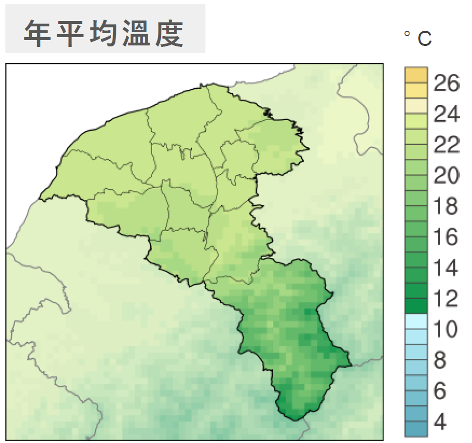
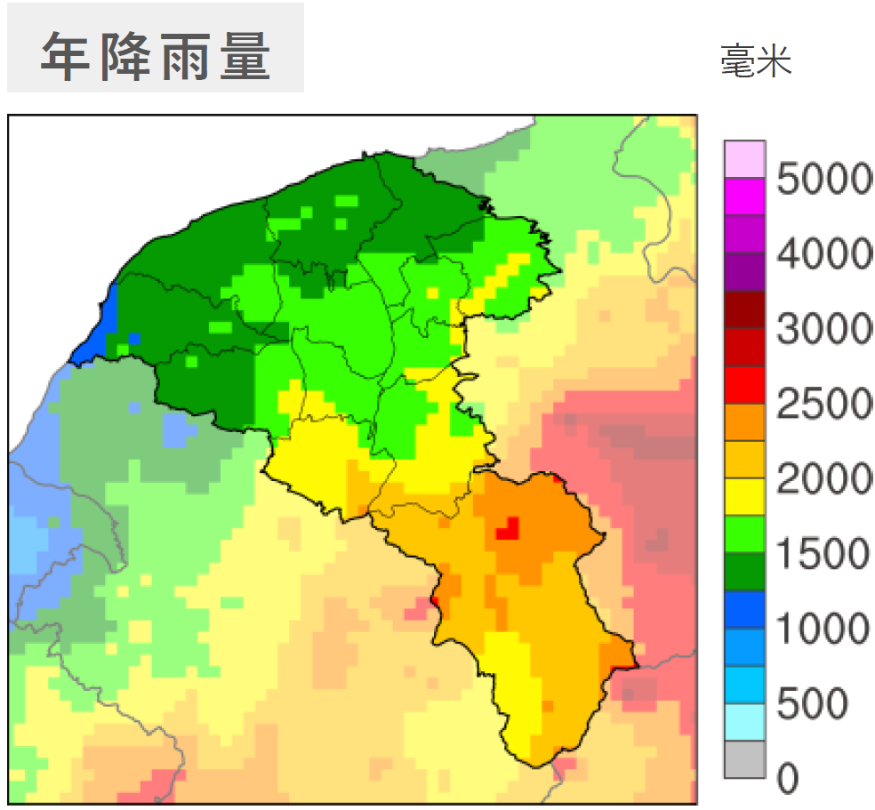
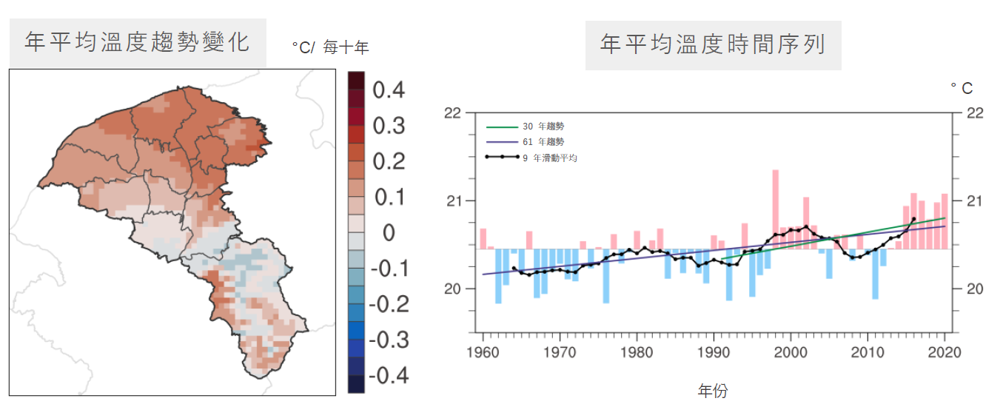
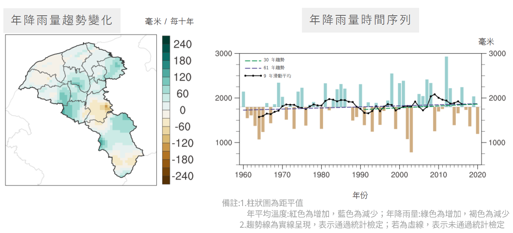

桃園市氣候變遷概述
主題一、地理位置與氣候特徵
桃園市位於臺灣本島西北部，地形豐富 [cite: 35]，夏季潮濕悶熱、冬季濕冷，年降雨量約在 1,500 至 2,000 毫米間；山區則在 2,000 至 4,000 毫米，冬季受東北季風影響，陰雨天氣雨日較多，夏季則常有午後對流雷陣雨；因此降雨量以夏季較多，冬季較少，但降雨日數反以冬季略多 [cite: 37]。桃園市整體而言無明顯乾季，但因降水不均，豐枯水期降水量差異較大，特有埤塘文化以保存灌溉用水資源 [cite: 37]。

圖：桃園市地形分布圖 (點擊放大)

圖：年平均溫度分布 (點擊放大)

圖：年平均降雨量分布 (點擊放大)
主題二、過去 60 年的觀測 (1960-2020)
桃園市年平均溫度為 20.5℃；年降雨量為 1,817.6 毫米 (中位數) [cite: 346]。
長期觀測 (1960-2020)
過去 60 年間，桃園年平均溫度每十年增加 0.09°C，年降雨量增加 24.1 毫米 [cite: 347]。
加速趨勢 (1991-2020)
然而，近 30 年的增溫速度明顯加快，桃園年平均溫度每十年增加 0.16℃，年降雨量增加 42.0 毫米 [cite: 348]。

圖：年平均溫度趨勢變化 (點擊放大)

圖：年平均降雨量趨勢變化 (點擊放大)
主題三、未來升溫 2°C 情境下的推估 (2015-2100)
在全球暖化 2°C 的情境下，推估桃園將面臨以下挑戰 [cite: 500]：
年平均溫度
+ 1.2°C [cite: 505]
年高溫 36°C 天數
+ 10.0 天 [cite: 505]
年最大一日降雨量
+ 11.6% [cite: 507]
主題四、資料來源
資料來源自「縣市氣候變遷概述2024」，國科會「臺灣氣候變遷推估資訊與調適知識平台計畫(TCCIP)」 [cite: 28]。
國家科學及技術委員會所推動之「臺灣氣候變遷推估資訊與調適知識平台計畫 (TCCIP)」長期進行氣候變遷本土資料產製與應用推廣 [cite: 27]，與交通部中央氣象署合作出版「縣市氣候變遷概述2024」 [cite: 27]，以全國 22 個縣市為對象，透過氣象科學數據的整理與圖資繪製，概要地敘述一個縣市的氣候資訊 [cite: 27]。
若需參考詳細科學數據與分析，請下載完整報告：
下載完整報告全文